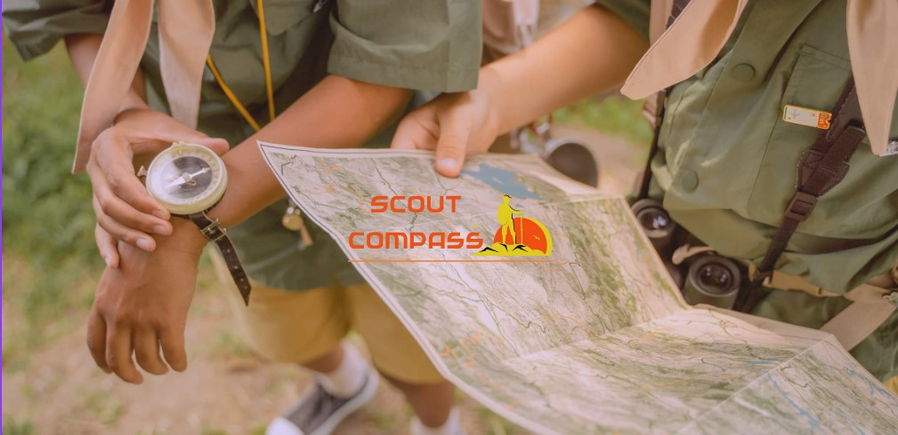
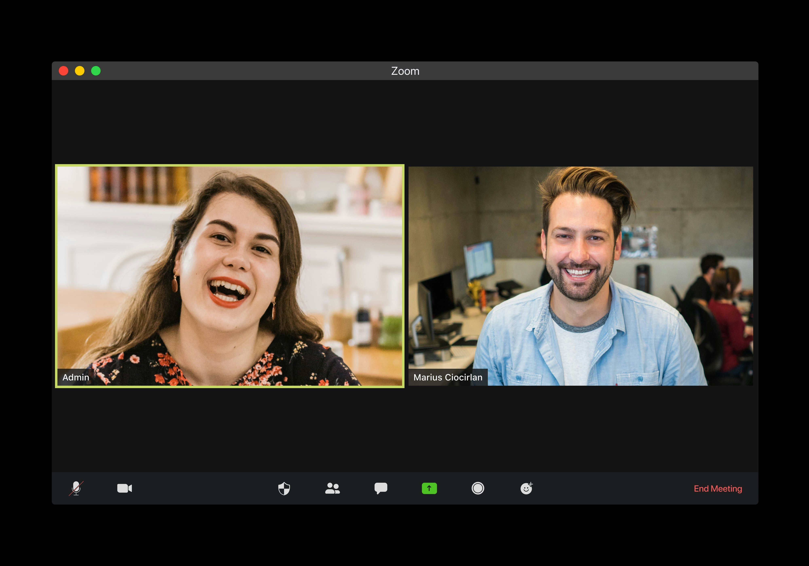

My Projects
As an undergraduate student and a one-year experienced intern software engineer,
I have undertaken a variety of solo and group projects.
These experiences have allowed me to develop and refine my skills
in software development, from ideation to implementation.
My projects span diverse areas, including web development,
backend systems, and algorithmic problem-solving, showcasing my
ability to work both independently and collaboratively to deliver high-quality solutions.
May, 2024
Scout Compass
LMS

Scout Compass LMS is a comprehensive Learning Management System developed as a university group
project.
This platform is designed to support scouts in managing their profiles, completing badge
requirements,
and staying updated on scout events. Built using Java and Spring Boot for the backend, and React
and JavaScript
for the frontend, Scout Compass offers a robust and user-friendly interface. Key features
include profile
management for scouts and instructors, event reminders, special announcements, and a tracking
system for
badge requirements. This project showcases our ability to work collaboratively, integrating
diverse technologies to
create an impactful and functional application.
January ,2023
Skin Consultation Management System

Developed as an individual project using Java, the Skin Consultation Management System
streamlines scheduling
and management of skin consultations. Patients can book appointments with their preferred
doctors,
while admins can add or remove doctors from the system. The application features secure login
for
patients and admins, appointment tracking, and database integration to manage patient and doctor
information
efficiently. This project showcases my ability to develop robust and user-friendly backend
solutions
independently.
April , 2023
Tour Up
Tourism Website
Discover Lanka is a tourism website developed using HTML and CSS,
aimed at promoting the cultural heritage and natural beauty of Sri Lanka.
The project involves creating a user-friendly and visually appealing web interface
that provides comprehensive information for tourists planning to visit Sri Lanka.
November ,2021
Face Recognition Based Attendance System

As part of a group project, I developed the backend for a Face Recognition Based Attendance
System using Python and Visual Studio.
This application enables users to mark attendance for online meetings with high efficiency and
accuracy.
By leveraging facial recognition technology, the system automates the attendance process,
reducing manual
effort and improving reliability. This project highlights my experience in integrating advanced
technologies
to create effective and efficient solutions.

Donec eget ex magna. Interdum et malesuada fames ac ante ipsum primis in faucibus. Pellentesque
venenatis dolor imperdiet dolor mattis sagittis magna etiam.

Donec eget ex magna. Interdum et malesuada fames ac ante ipsum primis in faucibus. Pellentesque
venenatis dolor imperdiet dolor mattis sagittis magna etiam.